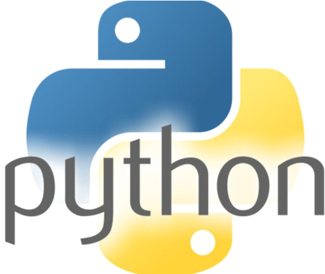
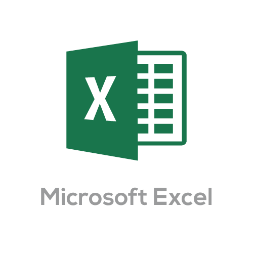
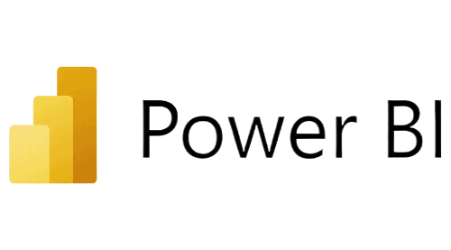
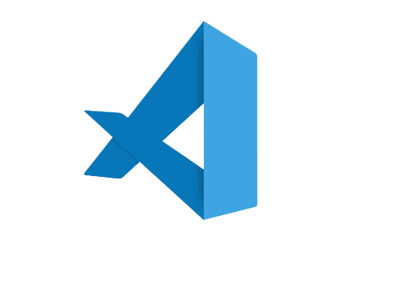

👨💻 Sobre Mí
Soy un Licenciado en Administración con orientación en análisis financiero, operaciones y procesos organizacionales. Mi objetivo es aplicar tecnología para transformar datos en decisiones, automatizando reportes y optimizando flujos de trabajo con Python, SQL y herramientas de visualización.
🚀 Actualmente me especializo en Python aplicado a las ciencias económicas, desarrollando soluciones que van desde sistemas de inventario hasta pipelines de datos completos con visualización en Power BI.
👥 Participo en un grupo de investigación interdisciplinario (abogados, jueces, antropólogos y economistas) que analiza delitos de cuello blanco. Mi rol es aportar análisis económico-financiero en casos de corrupción, lavado de activos y fraudes empresariales.
📊 Impacto Concreto
💡 Habilidades Profesionales
- Predisposición al aprendizaje
- Proactividad
- Gestión del tiempo
- Polivalencia
- Trabajo en equipo interdisciplinario
- Comunicación de datos a perfiles no técnicos
🛠️ Stack Técnico





📂 Proyectos
Proyecto 1: Automatización de inventario y Reporting Operativo con Python
Descripción:Desarrollo de un sistema de inventario en python que automatiza el registro, control y actualización de stock en tiempo real , integrando datos para su análisis operatiovo.
Valor del proyecto: Automatización completa del control de stock, eliminando errores manuales y reduciendo el tiempo de generación de reportes operativos.

Proyecto 2: Data Analytics con Python, SQL y Power BI
Descripción: Proyecto integral de análisis de datos orientado a la toma de decisiones, integrando automatización en Python, gestión de bases de datos con SQL y visualización estratégica mediante Power BI.
Valor del proyecto: Demuestra la capacidad de transformar datos en información clave de negocio, reduciendo errores y acelerando el reporting para decisiones gerenciales basadas en datos.

Proyecto 3: Investigación Interdisciplinaria sobre Delitos de Cuello Blanco
Descripción: Formo parte de un grupo de investigación conformado por abogados, antropólogos, jueces y profesionales de las ciencias económicas, donde analizamos fenómenos de criminalidad compleja vinculados a delitos de cuello blanco. Mi labor es aportar una mirada económica y administrativa, evaluando el impacto financiero, la racionalidad de los actores involucrados y las estrategias utilizadas en contextos de corrupción, lavado de activos o fraudes empresariales.
Material disponible:
Valor del proyecto: Integración del perfil de Licenciado en Administración en un equipo interdisciplinario, aplicando conocimientos económicos al análisis de criminalidad organizada y fraudes empresariales de alta complejidad.